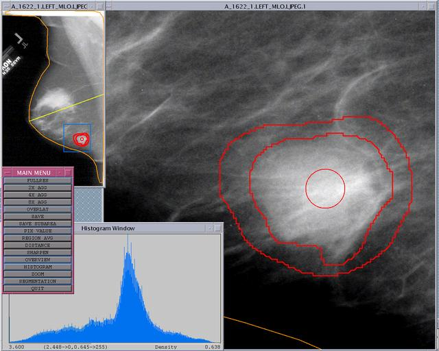

|  |
The program MammoView was written by Mike Heath to view Mammography images in the Digital Database for Screening Mammography (DDSM) database at the University of South Florida (http://marathon.csee.usf.edu/Mammography.html). This program was not written as part of the grant that funded the creation of the database, rather it was written as a tool for use in my dissertation research.
MammoView will display images in the ICS format used in DDSM, in the format used by the DBA 21 scanner, in the format used by the HOWTEK 760 scanner, images in raw format (using user specified geometry values) and images in 8 or 16 bit PGM format.
Invoking MammoView with no arguments will display the usage of the program. When .dba, .pgm or .dcm images are displayed, no variables describing the image geometry are needed because that information is read from the file. If raw images (i.e. images with no header or images with some other format) are used, the variables specifying the image geometry must be specified. When .ics files are used, the -view flag must be used to specify which of the four images are to be displayed. When the program in run, pressing the right button on the displayed image will toggle the main menu on an off.
------------------------------------------------------------
MammoView -i filename | -ics file.ics -view VIEW [-inp #pixels]
[-inl #lines] [-bpp #bytesperpixel] [-hb #headerbytes]
[-swap_bytes] [-sr sample_rate] [-w width] [-h height]
[-view whichview] [-direction DIRval] [-intensity]
[-density] [-verbose] [-ws #bits] [-manywin] [-version]
[-segmentation file.sgt] [-detection file.det max#det suspthresh]
[-l MASS | CALCIFICATION] [-pathology MALIGNANT | BENIGN]
Mandatory Arguments:
-------------------
-i filename = Input image (filename.dba, filename.ics or filename.pgm).
--- or ---
-ics filename -view VIEW = List the ics filename and view may be any of
(RIGHT_MLO, RIGHT_CC, LEFT_MLO or LEFT_CC)
Optional Arguments:
-------------------
-inp #pixels = Number of pixels per line of the image.
-inl #lines = Number of lines in the image.
-bpp #bytesperpixel = Number of bytes per pixel (1 or 2, default is 1).
-hb #headerbytes = Number of header bytes in the image (default is 0).
-swap_bytes = Swap the bytes when reading from or writing to the file.
-sr sample_rate = Pixel sample rate in microns/pixel.
-w width = Width of the fullresolution window.
-h height = Height of the fullresolution window.
-view whichview = LEFT_CC, LEFT_MLO, RIGHT_CC or RIGHT_MLO.
-direction DIRval = Viewing film looking "TOWARD_SOURCE" or "AWAY_FROM_SOURCE"
-intensity = Work in intensity.
-density = Work in scaled density (DBA, LUMISYS, HOWTEK or HOWTEK_ISMD).
-verbose = Print out information for debugging.
-ws #bits = Workstation bits (8 or 24).
-manywin = Start the program displaying many windows.
-version = Print out the version number and exit.
-ics FILE -view VIEW = Allows the ground truth to be used when -i is used.
-segmentation file = Allows the breast segmentation and axis to be displayed.
-detection file # # = Allows the detections to be displayed on the image. The
first # is the max detections to use and the second is
the suspiciousness threshold to apply.
------------------------------------------------------------
The -ws flag is used to specify whether the workstation on which the program is being run is set up for 8 or 24 bit color. This determines whether or not a private color map is allocated by the program.
Source code is now available for this program, and the program comes "AS IS". Previously only an executable version of the program was being distributed.
Basic instructions for using this program are as follows:
The program was written in 'C' using the XWindows library. It was compiled on a Sun ULTRA-30 workstation with 128MB of RAM using gcc.
The MammoView program relies on a separate image compression program named jpeg. An environment variable must be set so the MammoView program knows the location of the jpeg executable file so it can invoke the program with a system call. The command setenv JPEG_PROGRAM "/home/captiva1/heath/bin/jpeg" works on my system because that is where I placed the jpeg program.
I will accept and appreciate constructive feedback on your experience with this program.
MammoView is part of a larger set of software that is will be made available by mid-August 2000.